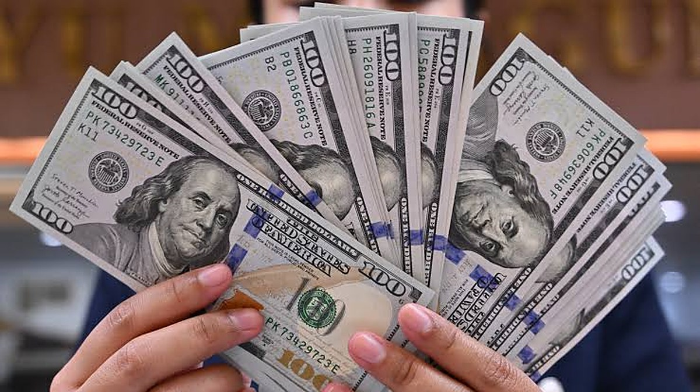

Photograph: Onyango George / EA Hospitality Pulse
Uganda's shilling fell 16 per cent this year. Rwanda's franc fell 2. The same dollar rate card now means four different things.
For two decades East Africa's dollar-priced hotels carried an automatic hedge: when local costs rose, the local currency fell, and the gap closed itself. In 2026 that stopped working in half the region, and Rwanda's October inflation print shows what a property is left holding when it does.
On 6 November the National Bank of Rwanda published its annual report, and on the face of it the news was good. Real GDP had grown 10.6 per cent in 2025/2026, up from 6.3 per cent the year before. Merchandise exports were up 33 per cent. And the Rwandan franc, which had shed 9.68 per cent against the US dollar in the previous financial year, had given up only 2.28 per cent in this one. Governor Soraya Hakuziyaremye identified persistent inflation as the central challenge, noting that the headline rate had averaged 9.2 per cent against a target band of 2 to 8 per cent. A stable currency and a double-digit growth rate is the combination every finance ministry in the region would like to be presenting.
Four days later the National Institute of Statistics of Rwanda published the October consumer price index. National inflation was 26.5 per cent year on year. In urban areas, where the hotels are, it was 19.5 per cent. In rural areas it was 31.3 per cent. The monthly move alone was 6.5 per cent nationally. Those two documents, published inside a week by two arms of the same state, describe the same economy. For anyone running a hotel in Kigali, read together they describe a trap.
The trap is this. An East African hotel of any scale sells in dollars and spends in local currency. It quotes a rack rate in dollars, contracts tour operators in dollars, signs conference room blocks in dollars, and then pays its staff, its electricity bill, its vegetable supplier and its laundry in francs or shillings. For most of the past twenty years that mismatch has been a quiet subsidy rather than a risk, because the two sides moved together. When domestic costs rose, the currency weakened, each dollar of revenue converted into more local currency, and a rate card set eighteen months earlier turned out, by accident, to have been indexed. Nobody wrote that hedge into a contract. It simply arrived, year after year, and operators came to price as though it always would.
In 2026 it did not arrive in Rwanda. The franc gave back 2.28 per cent while the cost of running a hotel in Kigali rose by something close to a fifth. The statistics office puts the urban restaurants and hotels category at 20.6 per cent year on year in October. Urban transport is up 22.4 per cent, urban energy 36.3 per cent, urban food and non-alcoholic beverages 28.9 per cent, and urban vegetables 56.4 per cent. Housing, water, electricity, gas and other fuels, a line that maps fairly closely onto a hotel's fixed plant, is up 14.2 per cent. Against that, two percentage points of currency relief is not a hedge. It is a rounding error.
What makes the Rwandan print hard to argue away is the underlying rate. Urban core inflation, which strips out fresh products and energy, is only 11.5 per cent, and rose 0.8 per cent on the month. The pressure is concentrated in exactly the items a hotel cannot substitute, defer or import around: the food it serves, the fuel it burns and the transport that brings both to the door. Donatille Murekeyisoni, a fruit seller at the Gisimenti business hub in Kigali, gave The New Times the transmission in one sentence back in April, when fuel prices jumped: "Transport for a sack, which used to cost Rwf1,000, has now increased to Rwf2,000." Prudence Sebahizi, Rwanda's Minister of Trade and Industry, said at the time that "The impacts are still being reviewed, and measures are being taken step by step." Seven months later the October index suggests the review is still running and the step-by-step measures have not caught the food line.
Now cross the border. Over the past year the Ugandan shilling lost about 16.6 per cent against the dollar, the Tanzanian shilling 6.7 per cent and the Kenyan shilling 0.4 per cent, according to figures compiled by Robert Katuntu, managing director and chief investment officer of Alpha Asset Managers in Kampala, in an analysis published on 28 October. Uganda's currency opened the year near Shs 3,623 and touched Shs 4,143 on 12 October, its weakest level since Bloomberg began tracking it in 1993. The Bank of Uganda raised its policy rate by 225 basis points to 12 per cent on 14 October, lifted the cash reserve requirement to 13.5 per cent and sold roughly $30 million, its first direct intervention since June 2022. On 11 November Governor Michael Atingi-Ego told Parliament's committee on commissions, statutory authorities and state enterprises that the central bank cannot sustainably defend the shilling against depreciation, and that it could intervene to moderate fluctuations only in the short term. Reserves stand at about $6.7 billion against annual central bank obligations for government transactions of roughly $2 billion.
A Ugandan lodge owner reading that will have winced at the interest rate and the import bill. But on the revenue line, that lodge has just received the largest automatic rate increase in the region. The $450 full-board tariff it contracted for 2026 converts into about 16 per cent more shillings than it did a year ago, which is considerably more than Ugandan inflation of 4.6 per cent. Katuntu's reading is that this is mostly an overdue correction rather than a rupture. "A currency correction is uncomfortable, but it is not a crisis," he wrote. For a dollar-earning hotel with shilling costs, it is not even particularly uncomfortable.
Kenya sits at the opposite pole, and does so deliberately. The shilling ended 2025 at 129.01 to the dollar, traded at 129.40 at the end of July and was quoted by the Central Bank of Kenya at 129.96 on 12 November. That is less than one per cent of movement across eleven months, in a year when the Ugandan shilling moved sixteen. Gross reserves have climbed to roughly $15.4 billion, above six months of import cover, and the stability is not obviously accidental: Treasury officials have said publicly that without central bank dollar purchases the shilling would have appreciated to around 118 to 120, which would make the prevailing rate some 7 to 9 per cent weaker than a clean float. The Parliamentary Budget Office has described the pattern as consistent with tight management or active liquidity smoothing. David Precious, senior market analyst at EBC Financial Group, put the risk plainly in September: "Suppressed volatility is deferred volatility, not absent volatility."
Kenyan hoteliers have, for now, the worst of the Rwandan arrangement without the Rwandan severity. Inflation reached 7.3 per cent in October, the highest in more than three years, with transport up 17.1 per cent and food up 10.2 per cent, on figures the statistics bureau released on 30 October. Against that, the currency gave back four tenths of one per cent. And the second shock absorber is also being held shut. On 14 November the Energy and Petroleum Regulatory Authority left all three Nairobi pump caps unchanged for the cycle to 14 December, at Sh226.96 for petrol, Sh227.76 for diesel and Sh219.87 for kerosene. It did so despite landed costs rising 6.11 per cent for petrol and 6.73 per cent for diesel month on month, by absorbing Sh8.58 a litre on petrol, Sh10.54 on diesel and Sh1.16 on kerosene, and by drawing Sh4.6 billion from the Petroleum Development Levy Fund.
For an off-grid camp burning diesel in a generator, that intervention is welcome and it is also a warning. Two of the three prices that determine a Kenyan property's cost base, the exchange rate and the pump price, are currently being set with a thumb on the scale. Neither is a forecast. Both are decisions that can be reversed in a month.
The segment where this arithmetic bites hardest is the one East Africa has spent five years cultivating, because it is the one priced furthest in advance. Rwanda has built the most deliberate business-events strategy on the continent: Kigali has ranked second in Africa for international association meetings for two consecutive years, behind Cape Town, and the sector generated about $94.7 million in 2025 on Rwanda Development Board figures, after roughly $95 million from more than 65,000 delegates in 2023 and $84.8 million from more than 52,000 in 2024. The national strategy targets $224 million by 2029. Association congresses are bid for, won and priced two to four years out, in dollars, with room blocks fixed at the time of the bid. A Kigali hotel that quoted a 2027 congress rate in 2025 did so when the franc was depreciating at close to 10 per cent a year. It will honour that rate in a year when the franc is depreciating at 2 and its food bill is rising at 29.
Layered on top is a cost the guest is told they are paying. Rwanda's cabinet approved a 3 per cent tourism levy on accommodation in February 2025. Finance Minister Yusuf Murangwa described it precisely: "Every tourist who books a room will pay the tourism levy, which is 3% of the room's cost." Jean Guy Afrika, chief executive of the Rwanda Development Board, was equally clear that "The tourism levy is not paid by the hotel. It is not double taxation." On a rate negotiated afresh, that holds. On a dollar rate block agreed two years ago and contractually inclusive of taxes, it does not, and the hotel discovers which kind of contract it signed only when the invoice is raised.
None of this argues for a weaker currency. Uganda's depreciation arrived with a 12 per cent policy rate, a widening current account deficit and about $200 million of portfolio money leaving the bond market in a fortnight, and no hotelier should wish that on a neighbour for the sake of a better conversion. The argument is narrower and more practical. The implicit hedge that made dollar pricing safe in East Africa was never a policy. It was a correlation, and in 2026 the correlation broke in opposite directions on either side of the same customs union.
What follows is contractual rather than macroeconomic. Forward-priced inventory now needs the indexation that the currency used to supply by default: shorter rate horizons for business-events blocks, an explicit cost-escalation clause tied to the published national index rather than to the dollar, and taxes quoted as additional rather than inclusive wherever the contract runs beyond twelve months. Operators in Kenya and Rwanda in particular should be modelling their 2027 cost base against the possibility that the pump cap unwinds and the exchange rate adjusts in the same quarter, because the fiscal machinery holding each one is finite and visibly being drawn down.
The region's dollar rate card looks like a single number. It has quietly become four of them.
📣 Telegram 💬 WhatsApp 💼 LinkedIn 📚 All guides